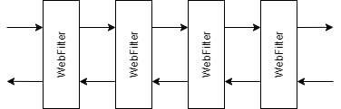

Spring Security & Opaque Token
Les filtres
Fonctionnement
interface WebFilter {
Mono<Void> filter(ServerWebExchange exchange, WebFilterChain chain);
}
class SampleWebFilter implements WebFilter {
@Override
public Mono<Void> filter(ServerWebExchange exchange, WebFilterChain chain) {
return chain.filter(exchange);
}
}Examples

MetricsWebFilter: métriques de success/error, temps, ...WebFilterChainProxy: securitéHeadersFilter: custom (sauvegarde des header pour forward au backend)LocaleFilter: headerAccept-LanguageCurrentUserFilter: headerX-User
WebFilterChainProxy

Configuration de Spring-Security
DSL & auto-configuration
@Bean
SecurityWebFilterChain configure(ServerHttpSecurity http) {
return http.oauth2ResourceServer()
.jwt()
//.jwkSetUri(...)
.and()
.and()
.build();
}
spring.security.oauth2.resourceserver.jwt.jwk-set-uri: ${OAUTH2_URI}/pf/JWKSCustomisation
Ordre : set > bean > auto-configuration
protected void configure(ServerHttpSecurity http) {
ReactiveAuthenticationManager authenticationManager = getAuthenticationManager();
// ...
}
private ReactiveAuthenticationManager getAuthenticationManager() {
if (this.authenticationManager != null) {
return this.authenticationManager;
}
ReactiveJwtDecoder jwtDecoder = getJwtDecoder();
// ...
}
protected ReactiveJwtDecoder getJwtDecoder() {
return (this.jwtDecoder != null) ? this.jwtDecoder : getBean(ReactiveJwtDecoder.class);
}Configuration du projet
Login OAuth2
http.oauth2Login();spring.security.oauth2.client:
provider:
adeo:
issuer-uri: ${OPENID_URI}
registration:
adeo:
provider: adeo
client-id: ${OPENID_CLIENT_ID}
client-secret: ${OPENID_CLIENT_SECRET}
authorization-grant-type: authorization_code
scope: [ openid, groups, profile ]
redirect-uri: ${FRONTEND_URL}/api/auth/login/oauth2/code/{registrationId}Resource Server OAuth2
http.opaqueToken();spring.security.oauth2.resourceserver.opaquetoken:
issuer-uri: ${OPENID_URI}/as/introspect.oauth2
client-id: ${OPENID_CLIENT_ID}
client-secret: ${OPENID_CLIENT_SECRET}Problème : redirection & 401
Problème
Défaut de .oauthLogin(): redirection vers /login
Besoin: error 401
Configuration
http.exceptionHandling()
.authenticationEntryPoint(new HttpStatusServerEntryPoint(UNAUTHORIZED))Besoin: redirection après login
Exemple : /doLogin?redirect_uri=http://example.org
Problème
Défaut de oauthLogin():
quand AccessDeniedException
ServerRequestCache#saveRequest()& redirect to/loginServerRequestCache#getRedirectUri()& redirect
Problème
Mais:
- accès direct à
/oauth2/authorization/{registrationId}: pas deAccessDeniedException - customisation de
authenticationEntryPoint()
Customisation
- Sauvegarder la requête avant redirection vers OpenID :
OAuth2AuthorizationRequestRedirectWebFilter - Restaurer la requête après redirection de OpenID :
OAuth2LoginAuthenticationWebFilter
Customisation
OAuth2AuthorizationRequestRedirectWebFilter

Uniquement si requête de login : authorizationRequestResolver.resolve()
Adapter/Proxy
Customisation
OAuth2LoginAuthenticationWebFilter

Uniquement si succès : onAuthenticationSuccess()
Adapter/Proxy
Remarque
Pas super customisable
Impossible de récupérer les composants pré-configurés
ServerOAuth2AuthorizationRequestResolver & ServerAuthenticationSuccessHandler
Besoin : token dans cookie
Plutôt que bearer en clair côté frontend.
Défaut
OAuth login :
ReactorContextWebFilterServerSecurityContextRepository:WebSessionServerSecurityContextRepository
Resource server : header Authorization
Sauvegarde du token
Dans OAuth2LoginAuthenticationWebFilter : ne garde que le Principal contenant l'id_token, et oublie l'access_token
Customisation : ServerOAuth2AuthorizedClientRepository
.oauth2Login().authorizedClientRepository(...)
Récupération du token
Avant les requêtes : ServerAuthenticationConverter
.oauth2ResourceServer().bearerTokenConverter(...)
Resource Server & Opaque Token
OpenID & tokens
access_token
Ne contient pas d'information de l'utilisateur
Authorisé par le userinfo_endpoint
OpenID & tokens
id_token
- Contient les information de base de l'utilisateur
- Non authorisé par le
userinfo_endpoint
access_token
- Signature invalide
- N'est pas du JWT
- Peut avoir un format différent (selon l'implémentation)
Problème
http.oauth2ResourceServer().opaqueToken()
Ne permet pas la convertion du Authentication ni du user info
Customisation
http.oauth2ResourceServer().authenticationManagerResolver()
Composant plus bas-niveau
user info + Authentication custom
Cookie VS Session
Contraintes des cookies
Sérialisation des données : string
Caractères autorisés
Taille limitée : ≈ 5000 caractères
Chiffrement : augmente la taille
Usage
Redirection OpenID
Cookie
impossible
compliqué